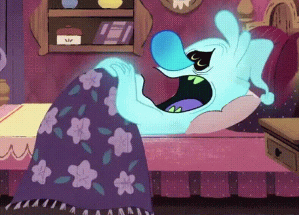

Sleep-Wake Disorders: Unraveling the Mysteries of Sleep Disruptions
Sleep-Wake Disorders, also known as Sleep Disorders, refer to a group of conditions that affect an individual's ability to regulate their sleep patterns. These disorders can disrupt the quality, timing, and duration of sleep, leading to various physical, mental, and emotional health issues. Sleep-Wake Disorders can result in daytime fatigue, difficulty concentrating, mood disturbances, and impaired overall well-being. Proper diagnosis and treatment by healthcare professionals are essential for managing these disorders and improving an individual's sleep health.

Importance of Addressing Sleep Issues
Addressing sleep issues is of paramount importance for a variety of reasons. First and foremost, sleep is a fundamental biological need, and the quality and quantity of our sleep have a profound impact on our overall health and well-being. Sleep plays a crucial role in the body's ability to repair and rejuvenate itself, regulate important bodily functions, and maintain a healthy immune system. Disruptions in sleep can lead to a host of physical health problems, including obesity, diabetes, cardiovascular issues, and a weakened immune response.sleep is integral to maintaining a high quality of life. It contributes to increased energy levels, an improved mood, and a sense of overall well-being. Sleep also has a profound impact on relationships, as sleep problems can lead to irritability and communication challenges that strain personal and professional connections.The importance of addressing sleep issues cannot be overstated. Prioritizing sleep health is an investment in both physical and mental well-being, safety, performance, relationships, and longevity.
Type of Sleep Wake Disorder
Insomnia
Insomnia involves difficulty falling asleep, staying asleep, or experiencing non-restorative sleep despite the opportunity for adequate sleep. It can be acute (short-term) or chronic (long-term).
Sleep Apnea
Sleep apnea is characterized by repeated interruptions in breathing during sleep. The most common types are obstructive sleep apnea (OSA) and central sleep apnea (CSA).
Narcolepsy
Narcolepsy is a neurological disorder characterized by excessive daytime sleepiness, sudden and uncontrollable sleep attacks, and cataplexy (sudden loss of muscle control).
Restless Legs Syndrome (RLS)
RLS causes an uncontrollable urge to move the legs, typically triggered by uncomfortable sensations. Symptoms worsen in the evening and can disrupt sleep.
Circadian Rhythm Sleep Disorders
These disorders involve a misalignment between an individual's internal body clock and the external environment, leading to difficulties in falling asleep and waking up at desired times.
Parasomnias
Parasomnias are abnormal behaviors during sleep, including sleepwalking, sleep talking, night terrors, nightmares, and REM sleep behavior disorder.
Promoting Healthy Sleeping Habits
Promoting healthy sleeping habits is essential for overall well-being and maintaining a high quality of life. Establishing a consistent sleep schedule by going to bed and waking up at the same times each day helps regulate your body's internal clock, promoting better sleep.Comfortable sleep environment with a quality mattress and pillows, a dark, quiet, and cool room, and good ventilation can greatly enhance sleep quality.Managing stress through relaxation techniques, controlling your sleep environment, and reserving your bed for sleep can also contribute to better sleep. Getting exposure to natural light during the day helps regulate your body's internal clock.